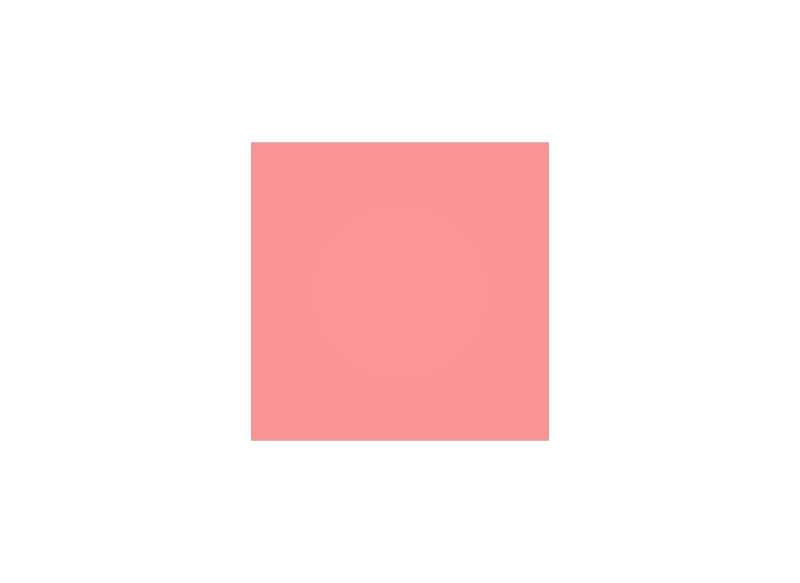

1つのファイルを直せば済むと思う
その値がどこから来ているかは、Property Stackで確かめてから直します。別のファイルが勝っていることがあります。
STEP 57 · COMPOSITION
別々のファイルに書かれた記述が、一つのPrimになります
今日これだけ
公式情報に基づく説明
一つのLayerの中に書かれたPrimの記述をSTEP 40 Prim Specと呼びます。Stage上に現れるPrimは、同じPathへ寄与するすべてのPrim Specを、Composition Arcの規則にしたがって重ねた結果です。型名・Property・Metadataは、それぞれ別のPrim Specから来ることがあります。「このPrimはどのファイルに書いてあるか」という問いに、答えが一つとは限りません。
USDA
#usda 1.0
(
defaultPrim = "Shape"
metersPerUnit = 1
upAxis = "Y"
)
def Cube "Shape"
{
double size = 1
color3f[] primvars:displayColor = [(0.2, 0.7, 0.3)]
double3 xformOp:translate = (0, 0, 0)
uniform token[] xformOpOrder = ["xformOp:translate"]
}def Xform "World"
{
def "Widget" (
references = @shape.usda@
)
{
}
}#usda 1.0
(
defaultPrim = "World"
metersPerUnit = 1
subLayers = [
@base.usda@
]
upAxis = "Y"
)
over "World"
{
over "Widget"
{
color3f[] primvars:displayColor = [(0.85, 0.2, 0.2)]
}
}/World/Widgetという一つのPathに対して、3つのファイルがそれぞれ違うことを言っています。shape.usdaは「Cubeで、大きさ1で、緑」、base.usdaは「ここに置く」、composed.usdaは「色は赤」です。
結果

shape.usda、置き場所はbase.usda、色はcomposed.usdaから来ています。examples/lesson-28/composed.usda / Apple USD Tools 0.25.2 のusdrecord（Hydra Storm・Metal）/ macOS 26.5.2・Apple M4from pxr import Sdf, Usd
stage = Usd.Stage.Open("composed.usda")
prim = stage.GetPrimAtPath("/World/Widget")
for spec in prim.GetPrimStack():
print(spec.layer.GetDisplayName(), spec.path, spec.specifier)
# composed.usda /World/Widget Sdf.SpecifierOver
# base.usda /World/Widget Sdf.SpecifierDef
# shape.usda /Shape Sdf.SpecifierDef
print(prim.GetTypeName()) # Cube
print(prim.GetAttribute("size").Get()) # 1.0
print(prim.GetAttribute("primvars:displayColor").Get()) # [(0.85, 0.2, 0.2)]
print(prim.IsDefined()) # True3つのPrim Specが並びます。3行目のPathが/Shapeであることに注目してください。参照されたファイルの中では別の名前で書かれており、合成のときに/World/Widgetへ移し替えられています。
Diagram
Python
from pxr import Pcp, Usd
stage = Usd.Stage.Open("composed.usda")
prim = stage.GetPrimAtPath("/World/Widget")
for arc in Usd.PrimCompositionQuery(prim).GetCompositionArcs():
node = arc.GetTargetNode()
print("%-22s <- %s %s" % (
arc.GetArcType(),
node.layerStack.identifier.rootLayer.GetDisplayName(),
node.path))
# Pcp.ArcTypeRoot <- composed.usda /World/Widget
# Pcp.ArcTypeReference <- shape.usda /ShapeGetPrimStack()が「どのファイルの記述が寄与しているか」を返すのに対し、PrimCompositionQueryは「どのArcでつながっているか」を返します。composed.usdaとbase.usdaはSublayerで同じLayer Stackに属するため、Arcとしては1つのRootにまとまります。2つの見方を使い分けます。
USDA → Python mapping
やりたいこと
寄与している記述を見る↓Python
prim.GetPrimStack()やりたいこと
つながっているArcを見る↓Python
Usd.PrimCompositionQuery(prim).GetCompositionArcs()やりたいこと
合成後の型と値を見る↓Python
prim.GetTypeName() / prim.GetAttribute(name).Get()Beginner notes
よくある間違い
その値がどこから来ているかは、Property Stackで確かめてから直します。別のファイルが勝っていることがあります。
上書きに使うのは合成後のPathです。参照されたファイル内のPathではありません。
合成が関わらない単純なシーンでは1つです。それが正常です。
型名も合成の対象ですが、参照先が決めた型を後から別の型に変えるのは一般的な使い方ではありません。差し替えたいときは、その部分を別のPrimとして持ち込みます。
Glossary
Official references
確認日: